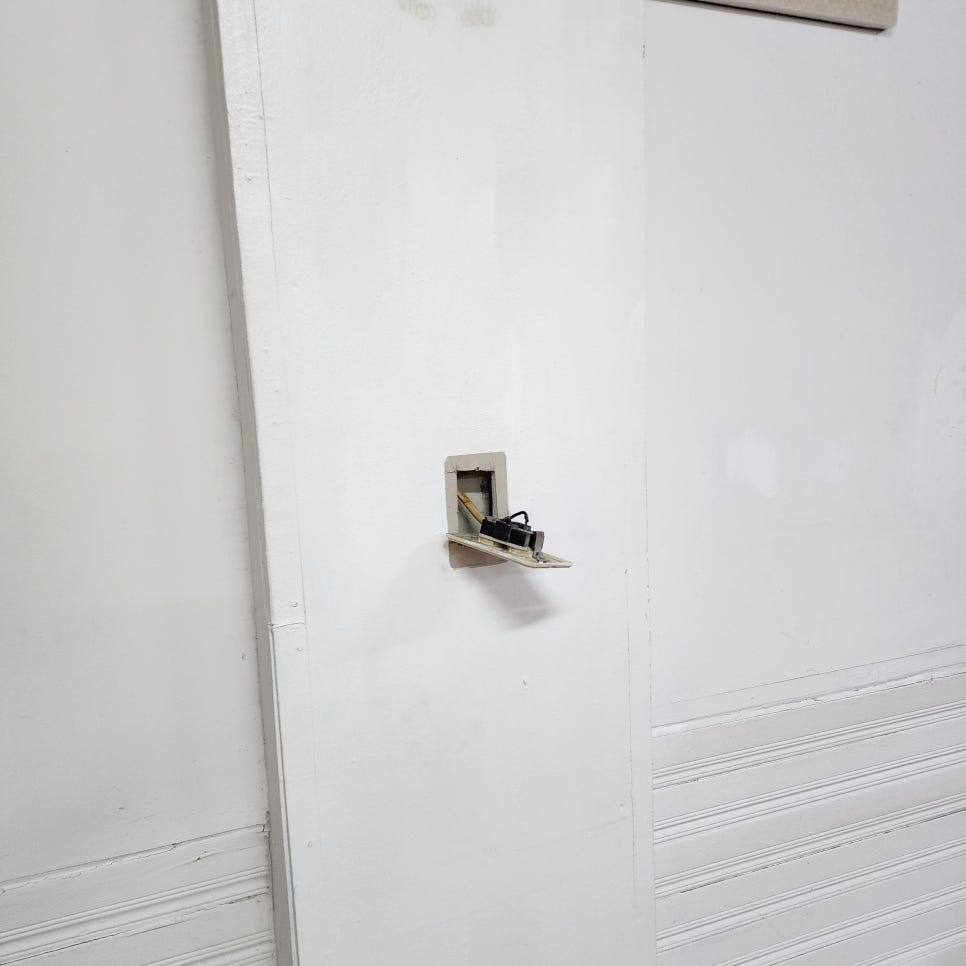
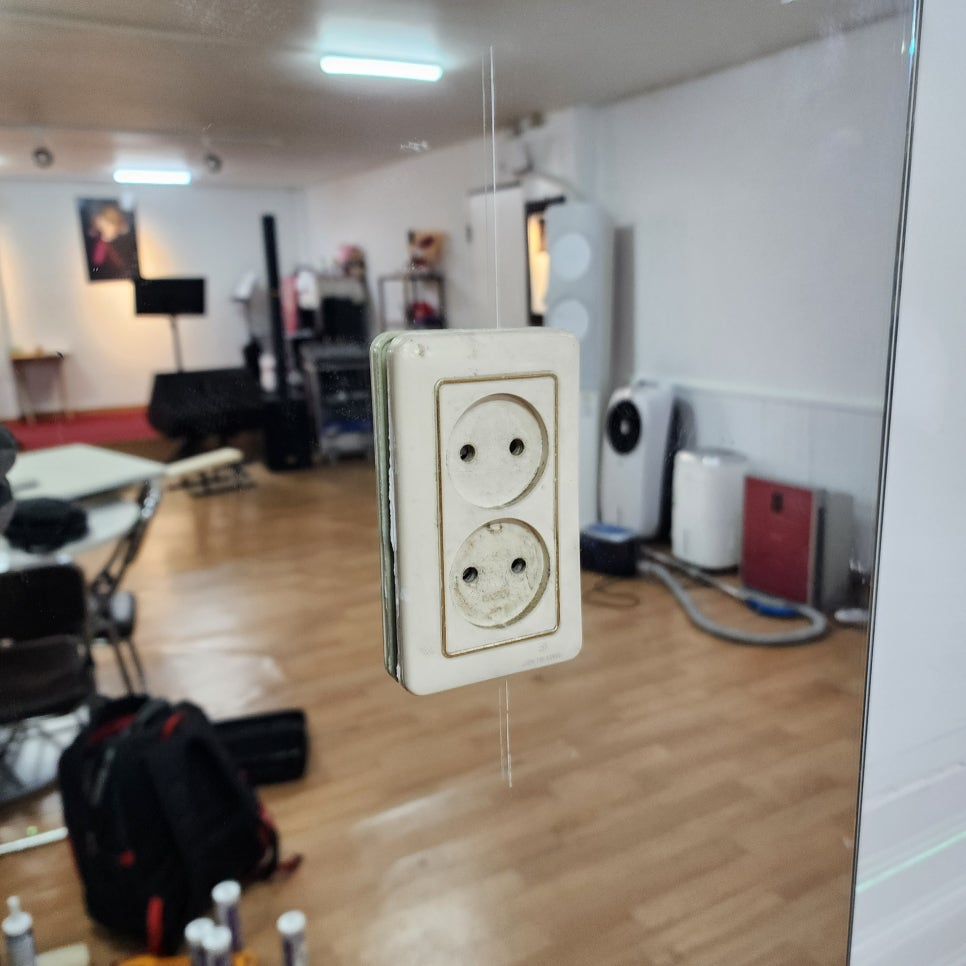

대형거울설치는 판이 클수록 이음매가 줄어 보기 좋지만, 지하 공간은 거울이 계단을 내려갈 수 있는지부터 따져야 합니다. 경기 안양의 한 지하 무용 연습실은 실측 때 줄자로 거울 크기를 재현해 계단을 직접 오가며 확인했고, 1200×2100 5mm 거울 약 7장으로 벽을 채웠습니다.
한눈에 보기
| 작업 | 지하 연습 공간 벽면 거울 |
|---|---|
| 지역 | 경기 안양시 만안구 안양동 |
| 장소 | 지하 무용 연습 공간(댄스학원) |
| 거울 | 5mm 1200×2100 약 7장 |
| 특이 사항 | 콘센트 자리 네모로 뚫음 |



지하 연습 공간은 거울 크기를 어떻게 정하나요?
고객님은 무대에 서는 댄스 가수로, 동작을 보며 연습할 수 있게 최대한 큰 거울을 원하셨습니다.
하지만 거울은 휘거나 접을 수 없어서, 계단 폭과 꺾이는 구간을 지나지 못하면 설치 자체가 안 됩니다. 실측 때 줄자를 거울 크기만큼 펼쳐 들고 계단을 오르내리며, 통과 가능한 가장 큰 크기를 1200×2100으로 정했습니다.
벽이 울퉁불퉁해도 댄스거울을 붙일 수 있나요?
됩니다. 이 벽은 보수 자국 때문에 면이 고르지 않았고, 아래에는 몰딩, 위에는 흡음재, 중간에는 기둥과 쓰던 2구 콘센트가 있었습니다. 하부 쪽에 실리콘을 촘촘히 채워 들뜸 없이 붙였습니다.
대형거울설치 순서
- 바닥에 보양 비닐을 깔고, 기둥을 기준으로 벽을 구간별로 나눴습니다.
- 콘센트의 가로·세로 중심을 재서 거울을 네모로 뚫고, 설치 후 콘센트를 거울 위에 다시 고정했습니다.
- 하부 쪽 실리콘으로 고정하고, 하단 받침목으로 수평을 맞추며 이음매가 어긋나지 않게 한 장씩 조정했습니다.
- 거울 표면과 받침목, 보양재를 정리해 마무리했습니다.
대형거울설치 가격은 어떻게 계산하나요?
거울은 1자(30×30cm)당 보통 6천~1만 원이며, 면적이 넓을수록 단가가 내려갑니다.
1200×2100 한 장은 약 28자입니다. 한 장만 맡기시면 최소 시공 가격이 있어 더 들 수 있고, 먼 지역은 운반비가 추가됩니다.
자주 묻는 질문
- Q. 무용실거울은 몇 mm를 쓰나요?
- 이 현장은 5mm 거울을 썼습니다. 벽면 대형 거울에 가장 많이 쓰는 두께입니다.
- Q. 거울 자리에 콘센트가 있으면 어떻게 하나요?
- 콘센트 위치를 재서 거울을 네모로 뚫고, 설치 후 콘센트를 거울 위에 다시 고정합니다.